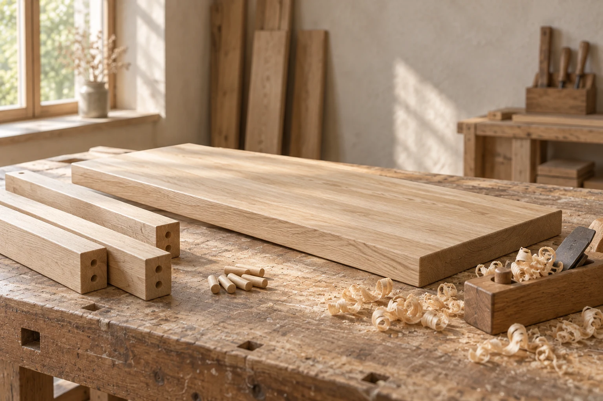

Alder Workshop / Material notes
Made to be mended.
A closer look at the pieces that let an everyday bench stay in use.
Explore the joint
Construction / 01
The joint is the detail.
The bench is imagined as a set of replaceable oak parts: a broad seat, four square legs and plain rails beneath. Wooden pins make the meeting points legible, so wear can be addressed at a joint rather than hidden under a permanent skin.
Its matte finish can be renewed as the surface gathers marks. The idea is a piece that can be taken apart, repaired and put back into daily use, with the construction left visible enough to understand.
A study in keeping things, not keeping them pristine.
See the material study02 / Process
Before the first joint.
Pale boards, squared stock and loose wooden pins set out a quiet materials story.
